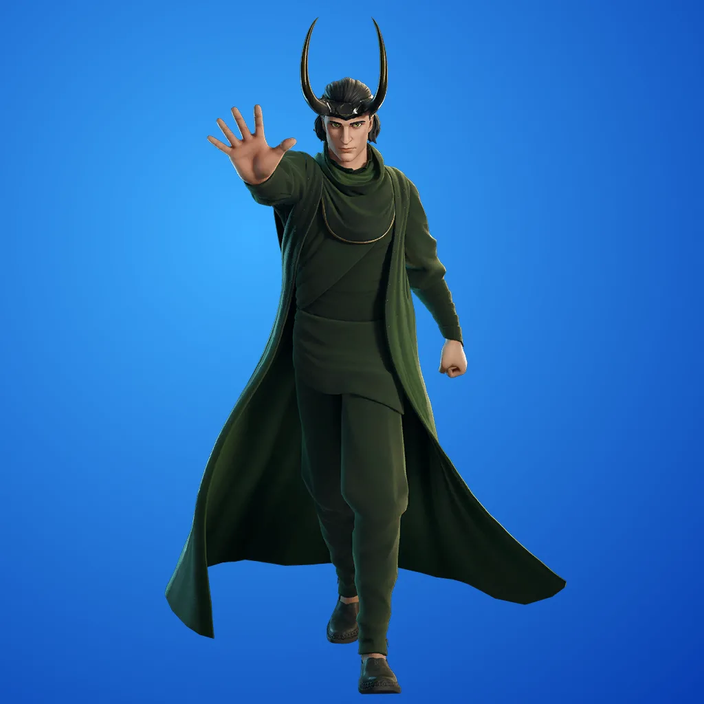

Latest Skins
Eren Yeager – The Attack on Titan protagonist has landed in Fortnite with themed cosmetics and gear.
The Mandalorian – Star Wars returns with this bounty hunter skin featuring Baby Yoda as a back bling.

Loki – The God of Mischief brings chaos to the island as part of the Marvel crossover.
Fortnite X Stars Wars Map
The current Fortnite season introduces major map changes including a futuristic biome, vertical combat zones, and floating islands. Notable new locations include:
- First Order Base – The First Order has claimed a mountaintop to house its imposing base of operations, which includes a hangar for repairing damaged First Order TIE fighters. There are five entrances, but its utility shaft is its main point of weakness and where you’ll find it easiest to sneak in..
- Outpost Enclave – There’s an element of danger to the Outpost Enclave, a boisterous hub of smuggler activity where tensions are known to run high. While you’re in the area, check out the interior of the parked sandcrawler nearby.
- Resistance Base – The underground Resistance command center is shrouded in foliage, hiding the facility's location from any ships passing overhead. Here, you’ll find X-wings and a ton of handy equipment for taking on the First Order’s fleet.
Collaborations & Events
Fortnite continues to push boundaries with global events and partnerships:
- Fortnite has collaborated with WWE to introduce several iconic wrestling superstars into the game, offering fans a chance to play as their favorite wrestlers. Here's an overview of the available WWE-themed skins and bundles
- LEGO Fortnite introduces a survival crafting mode with blocky aesthetics and collaboration builds.
- Avatar: The Last Airbender collaboration brings Aang, Zuko, and Katara to the island.
Fortnite: GALACTIC BATTLE!
- A galactic reckoning is coming…
Imperial Star Destroyers exit hyperspace in formation around the Death Star, which looms with its superlaser array fixed on the BR map.
Heroes from across eras are ready to strike back against the assault led by Emperor Palpatine from the shadows, and the Island’s fate hangs in the balance.
Draw your lightsaber and ready your blaster in Fortnite: GALACTIC BATTLE!